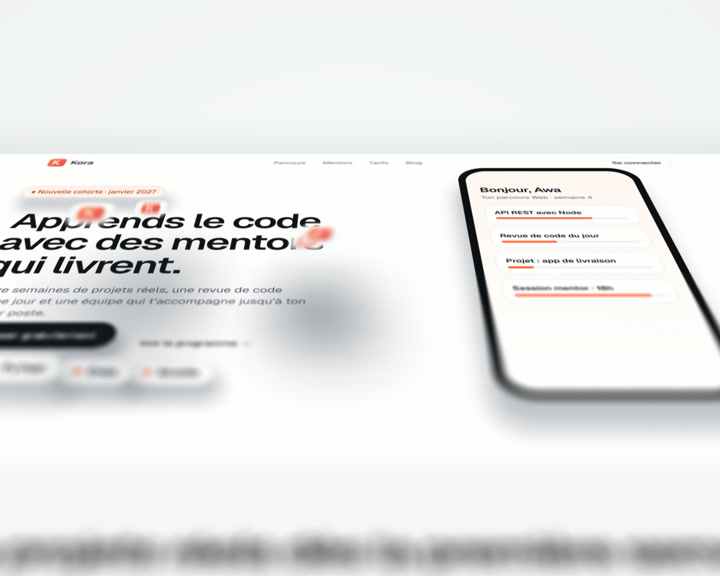
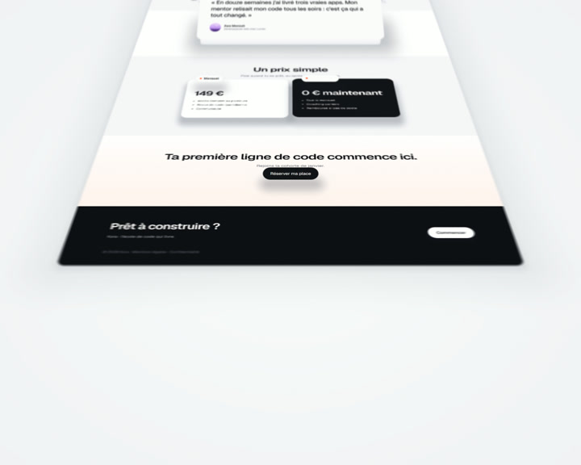
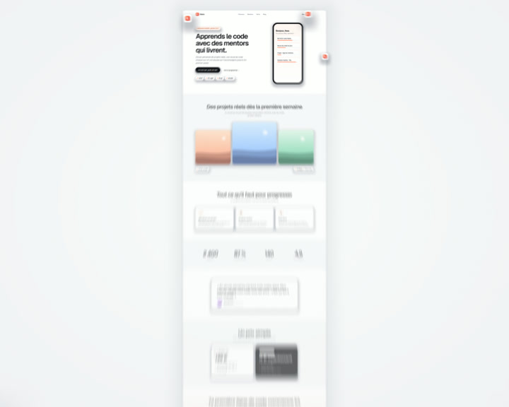
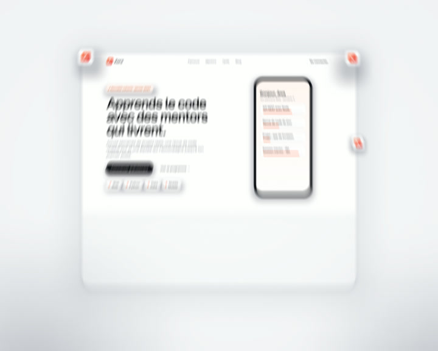

0.6 sLow over the hero, mockup sharp
5.4 sThe testimonial lifts toward the lens

8.3 sOne steady glide down the page

9.6 sOverhead: the whole page as one strip

9.85 sThe dive into the hero
14.4 sThe hero lands as a card under the title